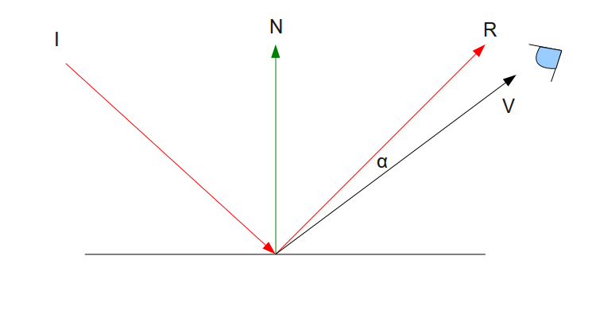
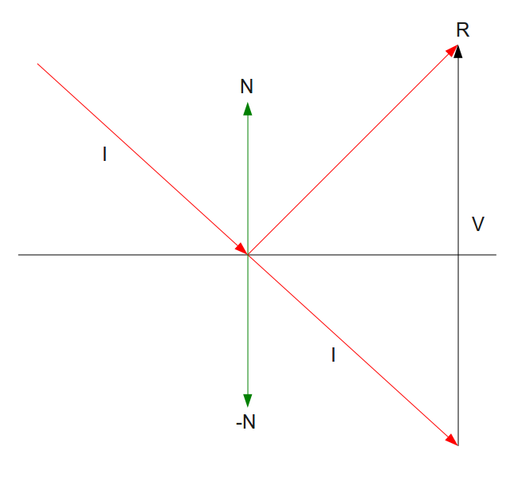
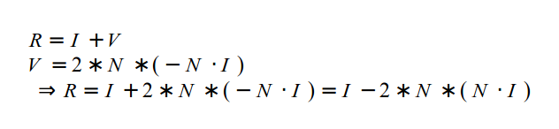
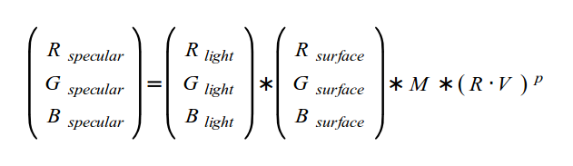
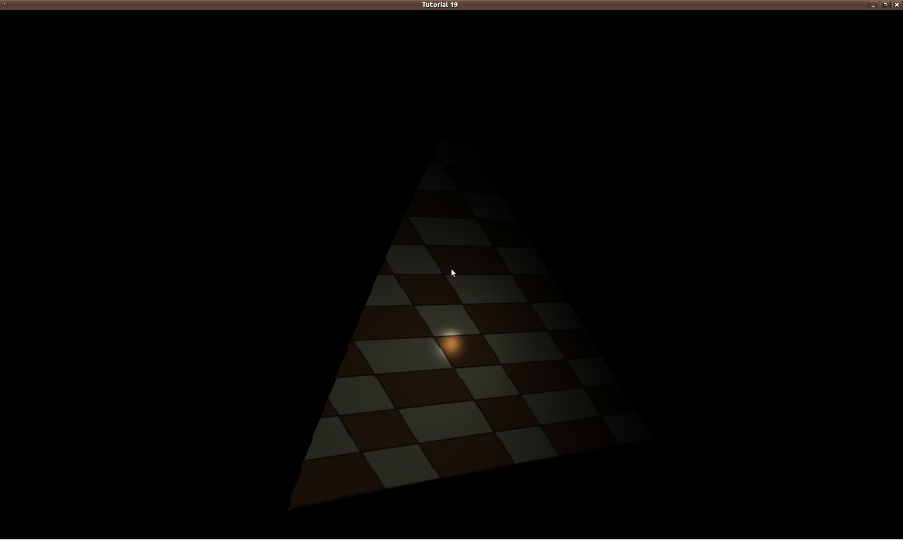
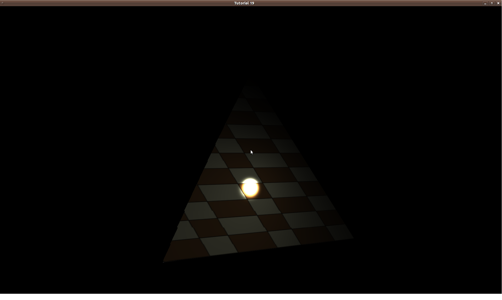

Previous Tutorial
Previous Tutorial
Home
Next Tutorial
Previous Tutorial
Previous Tutorial
Home
Next Tutorial
When we calculated ambient lighting the only factor was the strength of light. Then we progressed to diffuse lighting which added the direction of light into the equation. Specular lighting includes these factors and adds a new element into the mix - the position of the viewer. The idea is that when light strikes a surface at some angle it is also reflected away at the same angle (on the other side of the normal). If the viewer is located exactly somewhere along the way of the reflected light ray it receives a larger amount of light than a viewer who is located further away.
The end result of specular lighting is that objects will look brighter from certain angles and this brightness will diminish as you move away. The perfect real world example of specular lighting is metallic objects. These kinds of objects can sometimes be so bright that instead of seeing the object in its natural color you see a patch of shining white light which is reflected directly back at you. However, this type of quality which is very natural for metals is absent in many other materials (e.g. wood). Many objects simply don't shine, regardless of the where the light is coming from and where the viewer is standing. The conclusion is that the specular factor depends more on the object, rather than the light itself.
Let's see how we can bring in the viewer location into the calculation of specular light. Take a look at the following picture:
There are five things we need to pay attention to:
We are going to model the phenomenon of specular light using the angle 'α'. The idea behind specular light is that the strength of the reflected light is going to be at its maximum along the vector 'R'. In that case 'V' is identical to 'R' and the angle is zero. As the viewer starts moving away from 'R' the angle grows larger. We want the effect of light to gradually decrease as the angle grows. By now you can probably guess that we are going to use the dot product operation again in order to calculate the cosine of 'α'. This will serve as our specular factor in the lighting formula. When 'α' is zero the cosine is 1 which is the maximum factor that we can get. As 'α' is decreased the cosine becomes smaller until 'α' reaches 90 degrees where the cosine is zero and there is absolutely no specular effect. When 'α' is more than 90 degrees the cosine is negative and there is also no specular effect. This means that the viewer is absolutely not in the path of the reflected ray of light.
To calculate 'α' we will need both 'R' and 'V'. 'V' can be calculating by substracting the location of the point where the light hits in world space from the location of the viewer (also in world space). Since our camera is already maintained in world space we only need to pass its position to the shader. Since the image above is simplified, there is a single point there where the light hits. In reality, the entire triangle is lit (assuming it is facing the light). So we will calculate the specular effect for every pixel (same as we did with diffuse light) and for that we need the location of the pixel in world space. This is also simple - we can transform the vertices into world space and let the rasterizer interpolate the world space position of the pixel and provide us the result in the fragment shader. Actually, this is the same as the handling of the normal in the previous tutorial.
The only thing left is to calculate the reflected ray 'R' using the vector 'I' (which is provided by the application to the shader). Take a look at the following picture:
Remember that a vector doesn't really have a starting point and all vectors that have the same direction and magnitude are equal. Therefore, the vector 'I' was copied "below" the surface and the copy is identical to the original. The target is to find the vector 'R'. Based on the rules of vector addition 'R' is equal to 'I'+'V'. 'I' is already known so all we have to do is find out 'V'. Note that the opposite of the normal 'N' also appears as '-N' and using a dot product operation between 'I' and '-N' we can find the magnitude of the vector which is created when 'I' is projected on '-N'. This magnitude is exactly half the magnitude of 'V'. Since 'V' has the same direction as 'N' we can calculate 'V' by multiplying 'N' (whose length is 1.0) by twice that magnitude. To summarize:
Now that you understand the math it is time to let you in on a little secret - GLSL provides an internal function called 'reflect' that does exactly this calculation. See below how it is used in the shader.
Let's finalize the formula of specular light:
We start by multiplying the color of light by the color of the surface. This is the same as with ambient and diffuse light. The result is multiplied by the specular intensity of the material ('M'). A material which does not have any specular property (e.g. wood) would have a specular intensity of zero which will zero out the result of the equation. Shinier stuff such as metal can have increasingly higher levels of specular intensity. After that we multiply by the cosine of the angle between the reflected ray of light and the vector to the eye. Note that this last part is raised to the power of 'P'. 'P' is called the 'specular power' or the 'shininess factor'. Its job is to intensify and sharpen the edges if the area where the specular light is present. The following picture shows the effect of the specular power when it is set to 1:
While the following shows a specular exponent of 32:
The specular power is also considered as an attribute of the material so different objects will have different specular power values.
(lighting_technique.h:32)
class LightingTechnique : public Technique
{
public:
...
void SetEyeWorldPos(const Vector3f& EyeWorldPos);
void SetMatSpecularIntensity(float Intensity);
void SetMatSpecularPower(float Power);
private:
...
GLuint m_eyeWorldPosLocation;
GLuint m_matSpecularIntensityLocation;
GLuint m_matSpecularPowerLocation;
There are three new attributes in the LightingTechnique - eye position, specular intensity and power of the material. All three are indepedent from the light itself. The reason is that when the same light falls on two different materials (e.g. metal and wood) each of them shines in a different way. The current usage model of the two material attributes is a bit limiting. All the triangles that are part of the same draw call get the same values for these attributes. This can be a bit annoying when the triangles represent different parts of the model with different material properties. When we get to the mesh loading tutorials we will see that we can generate different specular values in a modeler software and make them part of the vertex buffer (instead of a parameter to the shader). This will allow us to process triangles with different specular lighting in the same draw call. For now the simple approach will do (as an exercise you can try adding specular intensity and power to the vertex buffer and access it in the shader).
(lighting.vs:12)
out vec3 WorldPos0;
void main()
{
gl_Position = gWVP * vec4(Position, 1.0);
TexCoord0 = TexCoord;
Normal0 = (gWorld * vec4(Normal, 0.0)).xyz;
WorldPos0 = (gWorld * vec4(Position, 1.0)).xyz;
}
The vertex shader above includes just one new line (the last one). The world matrix (which we added in the previous tutorial in order to transform the normal) is now used to pass the world position of the vertex to the fragment shader. We see an interesting technique here of transforming the same vertex position (provided in local space) using two different matrices and passing the results indepedently to the fragment shader. The result of the full transformation (world-view-projection matrix) goes into the formal system variable 'gl_Position' and the GPU takes care of transforming it to a screen space coordinate and using it for the actual rasterization. The result of the "partial" transformation (only to world space) goes into a user defined attributes which is simply interpolated during rasterization so every pixel for which the fragment shader is invoked is provided its own world space position value. This technique is very common and useful.
(lighting.fs:5)
in vec3 WorldPos0;
.
.
.
uniform vec3 gEyeWorldPos;
uniform float gMatSpecularIntensity;
uniform float gSpecularPower;
void main()
{
vec4 AmbientColor = vec4(gDirectionalLight.Color, 1.0f) * gDirectionalLight.AmbientIntensity;
vec3 LightDirection = -gDirectionalLight.Direction;
vec3 Normal = normalize(Normal0);
float DiffuseFactor = dot(Normal, LightDirection);
vec4 DiffuseColor = vec4(0, 0, 0, 0);
vec4 SpecularColor = vec4(0, 0, 0, 0);
if (DiffuseFactor > 0) {
DiffuseColor = vec4(gDirectionalLight.Color, 1.0f) *
gDirectionalLight.DiffuseIntensity *
DiffuseFactor;
vec3 VertexToEye = normalize(gEyeWorldPos - WorldPos0);
vec3 LightReflect = normalize(reflect(gDirectionalLight.Direction, Normal));
float SpecularFactor = dot(VertexToEye, LightReflect);
SpecularFactor = pow(SpecularFactor, gSpecularPower);
if (SpecularFactor > 0) {
SpecularColor = vec4(gDirectionalLight.Color, 1.0f) * gMatSpecularIntensity * SpecularFactor;
}
}
FragColor = texture2D(gSampler, TexCoord0.xy) * (AmbientColor + DiffuseColor + SpecularColor);
}
There are several changes in the fragment shader. There are now three new uniform variables that store the attributes required for calculating specular light (eye pos, specular intensity and power). The ambient color is calculated in the same way as the two previous tutorials. Then the diffuse and specular color vectors are created and initialize to zero. They both have a value different then zero only when the angle between the light and the surface is less than 90 degrees. This is checked using the diffuse factor (same as in the diffuse lighting tutorial).
The next step is to calculate the vector from the vertex in world space to the viewer location (also in world space). We do this by substracting the world position of the vertex from the eye position which is a uniform variable and identical for all pixels. This vector is normalized to make it ready for the dot product operation. After that the reflected light vector is calculated using the built-in function 'reflect' (you may also try to calculate it manually based on the description above). This function take two parameters - the light vector and the surface normal. The important thing here is to use the original light vector which goes towards the surface and not the reversed one which was used for the diffuse factor calculation. This is obvious from the diagram above. Next we calculate the specular factor as the cosine of the angle between the reflected ray of light and the vector from the vertex to the viewer (again using a dot product operation).
The specular effect is noticeable only if that angle is less than 90 degrees. Therefore, we check if the result of the last dot product operation is greater than zero. The final specular color is calculated by multiplying the color of light by the specular intensity of the material and the specular factor. We add the specular color to the ambient and diffuse color to create the total color of light. This is multiplied by the sampled color from the texture and provides the final color of the pixel.
(tutorial19.cpp:134)
m_pEffect->SetEyeWorldPos(m_pGameCamera->GetPos());
m_pEffect->SetMatSpecularIntensity(1.0f);
m_pEffect->SetMatSpecularPower(32);
Using the specular color is very simple. In the render loop we grab the camera position (which is already maintained in world space) and pass it to the lighting technique. We also set the specular intensity and power. All the rest is handled by the shader.
Play with different specular values and light direction to see their effect. You may need to circle around the object to get into a position where the specular light is visible.